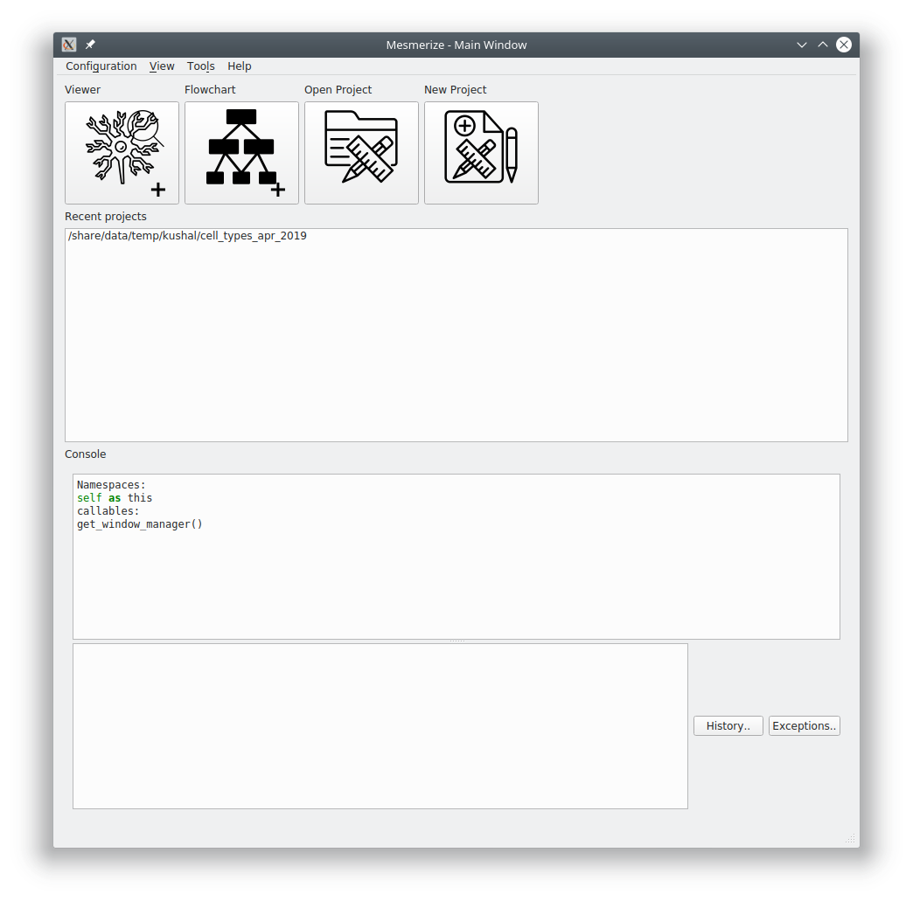
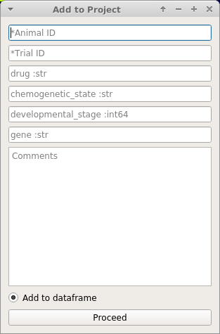
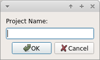
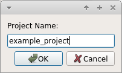
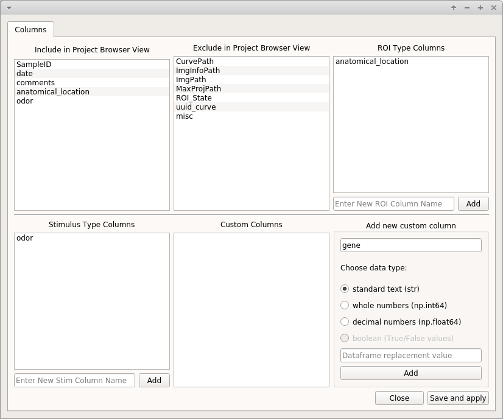
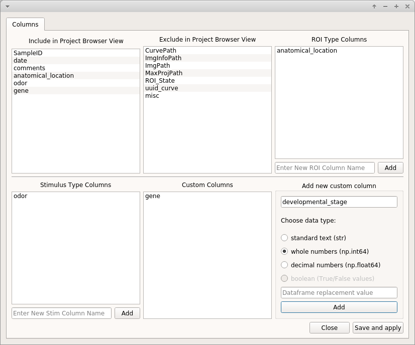

Create a New Project¶
Biological Questions¶
Before you create a new Mesmerize Project you must thoroughly think about the biological questions that you are interested in. Here are some thoughts to help you:
The effects of different types of temporary stimulation? Such as poking or odors?
Differences in calcium dynamics between different anatomical regions?
Chemogenetic experiments using transgenes to express DDREADs.
Non-temporary effects of drugs (for example, if the animal is bathed in drug for longer recordings).
- For example, if you are inducing seizures with PTZ, where you are interested in the differences between a control recording of 5 minutes and subsequent 5 minute recordings where the animal is bathed in PTZ (or whatever duration you determine is biologically meaningful). You could also be interested in a recovery stage to see what happens to the calcium dynamics when you “perfuse-back” the liquid medium (such as seawater, steinberg’s solution etc.) without the drug.
Differences in calcium dynamics between different stages during development
Differences in calcium dynamics between different cell types using GCaMP driven by specific promoters.
New Project¶
To create a new project click New Project in the welcome window.
Choose a location to store your project.
Choose a name for your project. This will create a directory within the location you have selected above using the name that you enter here. You can change the name of this project later.
 
Project Configuration¶
After setting a project name you must configure it. This is where your biological questions of interest are important. You can change your project configuration later, but it is most time efficient if you enter all your categories of interest now.
Warning
It’s best practice to restart Mesmerize whenever you change the project configuration.
See also
Add To Project Guide to understand how the project configuration relates to the addition of data samples to your project
Categorical Data Columns¶
Mesmerize allows you to create three main different types of categorical data columns (for the project DataFrame), and an unlimited number of each type. These categorical data columns allow you to group your data during analysis, and therefore perform comparisons between experimental groups. In essense, these categorical data columns form scaffold with which you can create your experimental groups during analysis.
Note
You can change the project configuration at any point in the future by adding new columns or changing the visible/hidden columns.
ROI Type Columns¶
Create ROI-bound categories with which you want to group your data. Enter the desired name for the category and click Add. Here are some examples:

- If you are interested in calcium dynamics between different anatomical regions, you create a column named
anatomical_region.- You want to define defined notochord cell identities on a anterior-posterior axis, defined as “cell_1”, “cell_2”, … “cell_n”. You can create an ROI Type Column named
notochord_cell_id.
See also
<link here> *ROI Manager guide* to understand how labels can be tagged onto ROIs using these categories that you have defined in the ROI Type Columns.
Stimulus Type Columns¶
If you’re interested in temporally mapping stimulus information to your traces you can add a “Stimulus Type column”. These are only for when you are applying a stimuli that are temporary and do not span the entire length of the video.
See also
<link here> Stimulus Mapping guide, to understand how stimuli can be labelled.
Custom Columns¶
Here you can create categories to tag any other piece of useful information to each Sample. i.e. to the entire video recording. For example:
- You are studying seizures, you perform a 5 minute recording in the medium, and then subsequent 5 minute recordings in PTZ. You can create a category called “drug_state”. When you add samples to your project you can tag drug states named “control”, “ptz_1”, “ptz_2”, “ptz_recovery_1” etc.
- This is also what you would use for chemogenetics experiments if you are recording for example without CNO for 5 minutes, and then with CNO for another 5 minutes.
Three different data types can be tagged to a category, standard text, whole numbers, and decimal numbers.
Warning
Data types cannot be changed later. If you are familiar with pandas you can manually change it, and the corresponding value in the project config file.
If you want to tag numerical information, such as the animal’s development stage, it can be useful to set the data type to whole numbers. This allows you to sort your data numerically. For example you may want to compare dynamics of all curves between stage 48 and 72.
If you are interested in dynamics between different cell types for which you are using specific GCaMP promoters, you can create a custom column called promoter or cell_type and select standard text as the data type.
When you add samples to your project from the viewer, you will be prompted to enter information that is directly based on the Custom Columns that you create here.
See also